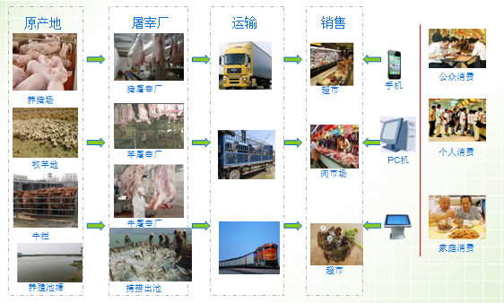

安盛食品安全管理系统(养殖版)
安盛食品安全管理系统(养殖版)是河南安盛科技股份有限公司专门针对养殖行业的企业研发的养殖产品信息追溯行业应用软件，它使用开源的JAVA语言进行开发，采用先进的B/S架构，使客户端零安装，有网络就能使用系统。
软件开发目标：企业使用更省心，产品宣传更有效！
一、养殖业追溯流程：

二、追溯实施方案(以牛为例):
- 养殖场对动物的某一部位进行标识（如牛耳标),然后向政府监管部门申请溯源码，根据溯源码对动物的防疫、喂料、疾病治疗等信息进行记录。
- 检验检疫机构根据溯源码，对养殖产品进行各方面检验检疫，将检测结果录入溯源平台。
- 屠宰场对牛的检疫、准宰信息、牛耳标号进行登记，分割牛胴体时，通过扫描条码标识，批量生成多个同样的标识码，粘贴在分割后的各部分牛肉产品的包装上，用于对牛肉产品进行追溯；
- 粘贴有追溯标签的牛肉产品进入流通环节后，参照“种植业中”所述的进货销货电子台账，对流通过程中的各环节进行流通数据记录。
- 餐饮服务机构利用扫描枪读取溯源码，通过进销电子台账录入溯源平台，并保留相关进货发票备查。
- 消费者根据产品上粘贴的溯源码标识，在各查询终端进行查询，系统根据此标识，查询流通环节的企业进货销货电子台账,以及基本的生产数据信息，自下而上查询信息形成产品的追溯数据信息。
- 政府监管部门则在全过程随时随地根据溯源码标识查询产品数据，为监管提供有力的决策信息。